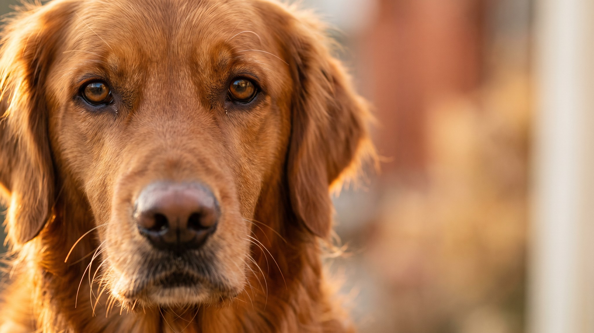

Зимой собака возвращается с прогулки в реагентах и грязи, и мыть её надо. Но отопление уже сушит воздух, а выпустить на улицу влажную собаку нельзя. Эта инструкция о том, как сделать всё правильно: как часто мыть зимой, как полностью просушить шерсть до выхода на холод и что делать, если кожа начала шелушиться от батарей.
🐾 Заведите дневник ухода за собакой
Вес, шерсть, обработки, прививки — всё в одном месте. А если что-то смущает, AI-ветеринар ответит круглосуточно и бесплатно.
Завести дневник → Завести в MAX →
У вас iPhone? AnimaLife есть в App Store
Зимой купают реже, чем летом. Частое мытьё вымывает защитный жир кожи, а батареи и так сушат воздух до 20–30% влажности. Ориентир: раз в 4–6 недель при использовании хорошего увлажняющего шампуня.
Лапы после каждой прогулки мыть нужно, но это не купание. Тёплой водой из лейки или тазика промываем подушечки, пространство между пальцами, нижнюю часть голени. Реагент, которого собаки нередко слизывают, накапливается именно там.
Если собака чистая между купаниями, но слегка пахнет, помогает сухой шампунь: наносите на шерсть, распределяете руками, через 2–3 минуты вычёсываете. Не замена полному купанию, но хорошо держит интервал.
Перхоть, зуд, тусклая шерсть зимой часто появляются из-за сухого воздуха, а не болезни. Простые меры:
Перхоть и сухость, которые не улучшаются за 2–3 недели при смене шампуня и добавлении увлажнителя, — повод к врачу. То же касается облысевших пятен, сильного расчёсывания, ранок на коже и резкого запаха. За этим может стоять аллергия, паразиты или нарушение работы щитовидной железы. Это решает ветеринарный осмотр.
Материал носит информационный характер и не заменяет очную консультацию ветеринара.
🐾 Чтобы уход не держать в голове
AnimaLife напомнит, когда стричь когти, вычёсывать, купать и обрабатывать от паразитов, и заведёт дневник по вашему питомцу. Бесплатно.
Настроить напоминания → Настроить в MAX →
У вас iPhone? AnimaLife есть в App Store
🐾 Понравился разбор?
Подпишитесь на канал — каждый день разбираем по одному тревожному симптому у кошек и собак: что в пределах нормы, а когда пора к врачу. Подпишитесь, чтобы не пропустить разбор, который может спасти здоровье вашего питомца.